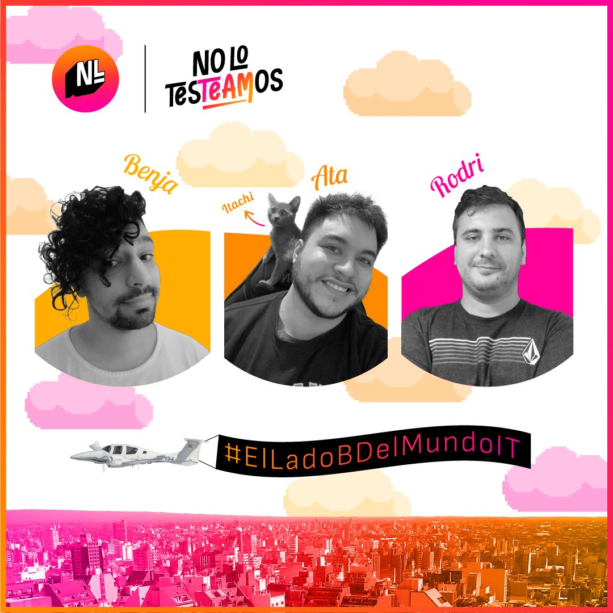

Último episodio: 26/12/2020
Ata: Toca la guitarra, fanatico de Pink Floyd y programador full-time. Lo podes encontrar fácilmente en comunidades y eventos TIC de cualquier ciudad que te imagines! @4t4sh
Rodri: El CAO de NoLo, o mejor dicho Chief Asador Officer. Mas de 10 años de experiencia en el sector IT, programador de día, padre fulltime y Jr en baile !! @ArEnYi 